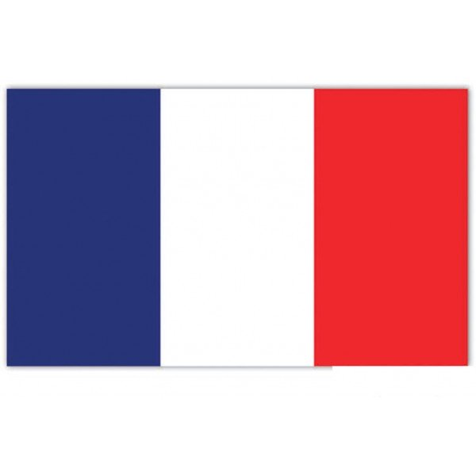
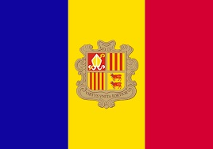

Cahiers techniques Eau-Energie — n° 1 — 2026
Desman des Pyrénées et prises d'eau de centrales hydroélectriques haute chute
Analyse critique des prescriptions existantes et proposition d'un double critère de protection proportionné
Versions linguistiques du cahier
Cette page constitue la page éditoriale principale du Cahier technique Eau-Energie n° 1. Le texte intégral sera publié dans quatre pages HTML dédiées, chacune avec ses métadonnées linguistiques propres, ses liens PDF et ses balises hreflang.

FRVersion française
Desman des Pyrénées et prises d'eau de centrales hydroélectriques haute chute
Texte intégral en français, version de référence pour les dossiers techniques, échanges administratifs et citations francophones.
→ cahier1-fr.html

CAVersió catalana
Almesquera dels Pirineus i captacions d'aigua de centrals hidroelèctriques d'alta caiguda
Versió catalana destinada als interlocutors pirinencs, andorrans i catalanoparlants en matèria d'hidràulica i biodiversitat.
→ cahier1-ca.html
 ES
ES
Versión española
Desmán de los Pirineos y tomas de agua de centrales hidroeléctricas de alta caída
Versión española para difusión técnica en el ámbito pirenaico e ibérico, con acceso al documento completo y al PDF asociado.
→ cahier1-es.html
 EN
EN
English version
Pyrenean Desman and high-head hydroelectric intakes
English version for international technical dissemination, with access to the full HTML page and associated PDF.
→ cahier1-en.html
Résumé éditorial
Ce premier cahier examine les prescriptions de protection du Desman des Pyrénées appliquées aux prises d'eau de centrales hydroélectriques haute chute. Il critique l'usage isolé d'un critère d'entrefer de grille et propose une approche hydraulique proportionnée fondée sur un double critère : vitesse d'aspiration et entrefer garde-fou.
Organisation documentaire
La présente page ne remplace pas les pages linguistiques complètes. Elle sert de point d'entrée stable pour le cahier, de support de citation général, de page de liaison interne et de repère éditorial pour la série Cahiers techniques Eau-Energie.
Référence générale conseillée. Denis Bouzon, « Desman des Pyrénées et prises d'eau de centrales hydroélectriques haute chute », Cahiers techniques Eau-Energie, n° 1, 2026, Cabinet Eau-Energie, édition multilingue, DOI : 10.5281/zenodo.20322166.
Position éditoriale
Ce cahier est publié dans une série technique continue en ligne. Il vise à fournir un support d'analyse exploitable pour les maîtres d'ouvrage, bureaux d'études, services instructeurs et acteurs de l'hydroélectricité, sans se substituer à l'appréciation réglementaire propre à chaque dossier.